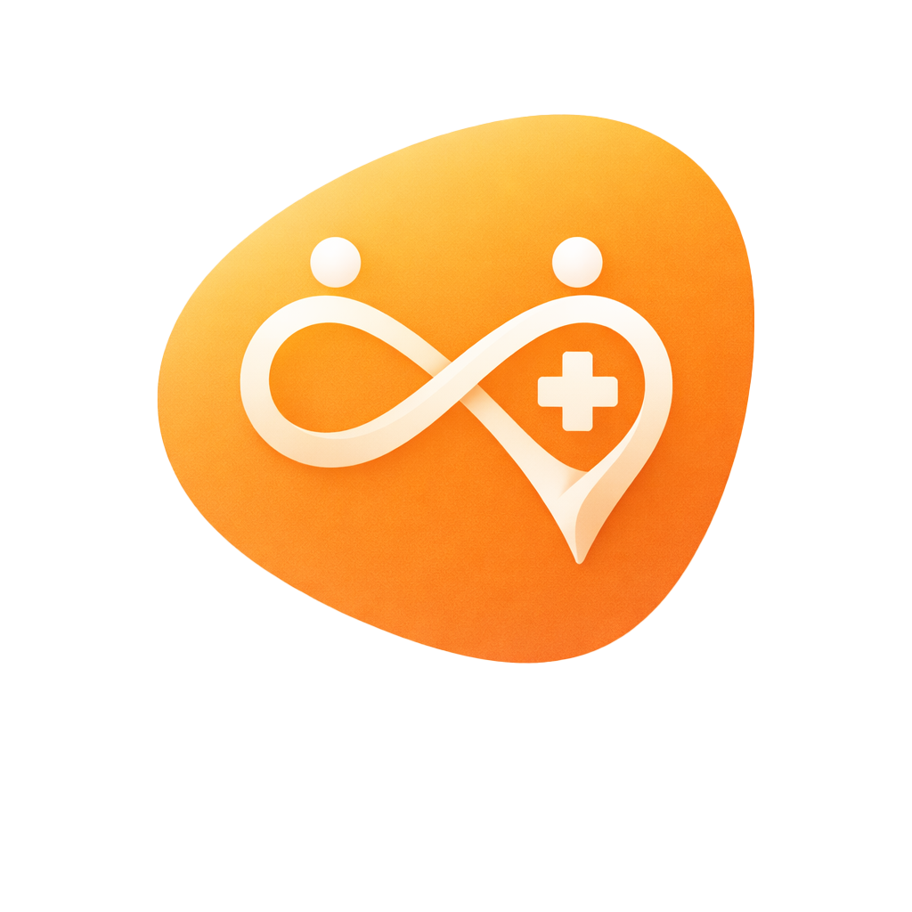

场景导航
开发工具
当前状态: {{ appState }}
UI Only 版本
9:41

医
医依YiYi
独自就医有所依
建立陪诊档案
我会问您几个简单的问题，为您建立一份专属的就诊档案，并匹配最合适的陪诊员。
{{ displayHeader }}
{{ userTranscript }}
{{ statusText }}
附近陪诊资源
GPS定位中...
医依正在听...
{{ userTranscript }}
{{ displayHeader }}
请选择一位陪诊员
预计 5 分钟后到达
{{ displayHeader }}
陪诊视角
{{ visitTimer }}
进入心内科诊室 09:52
重点对话已标记
医生语速较快，已为您自动定位时间轴。
识别结果：血常规检查单
已生成导诊路线下一步前往
2楼 B区 采血窗口
需空腹
用药安全提示
建议帮阿姨问一下...
"阿姨有慢性胃炎史，这个药（阿司匹林）饭前吃会不会伤胃？"
正在解析医疗单据...
就诊已结束
AI 已自动生成本次就诊的备忘录。录音存证已上传云端加密保险箱。
设置复诊提醒
2026年1月25日 (周日)
*服务仅限非医疗性质的基础陪诊，AI内容不构成诊疗建议，请遵医嘱。